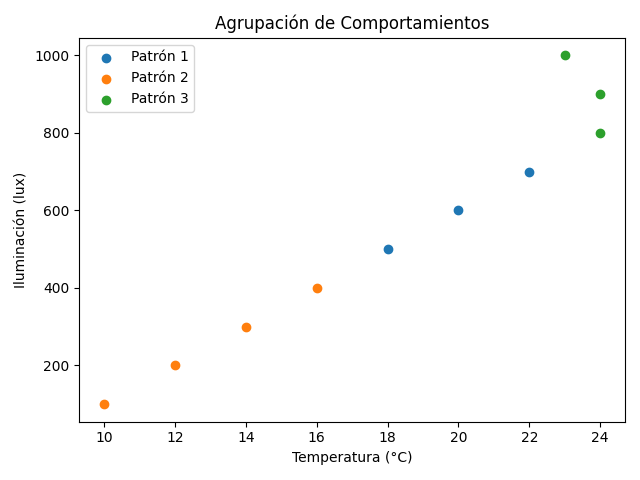
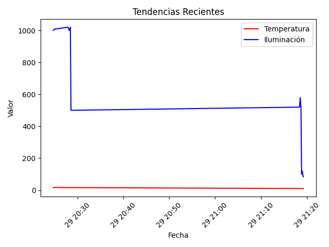

📊 Informe Automático IoT
📅 Fecha: 2025-07-12 13:54
📌 Análisis de Clústeres

📊 Distribución de patrones:
- Patrón 1: 1 muestras
- Patrón 2: 9 muestras
- Patrón 3: 5 muestras
🔍 Leyenda de Patrones:
- 🟥 Patrón 1
- 🟦 Patrón 2
- 🟩 Patrón 3
- 🔹 Patrón 1: Temperatura ~15.0°C, Iluminación ~1000 lux. ℹ️ Combinación atípica, requiere seguimiento.
- 🔹 Patrón 2: Temperatura ~15.0°C, Iluminación ~139 lux. 🌙 Ambientes fríos y oscuros, típicos de la noche.
- 🔹 Patrón 3: Temperatura ~22.6°C, Iluminación ~700 lux. ℹ️ Combinación atípica, requiere seguimiento.
📈 Tendencias
